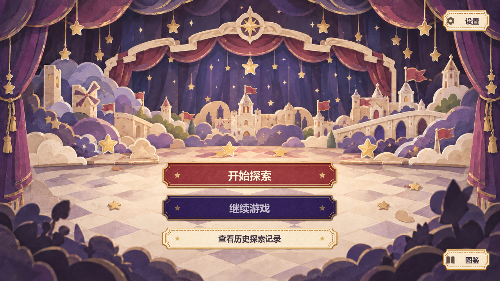
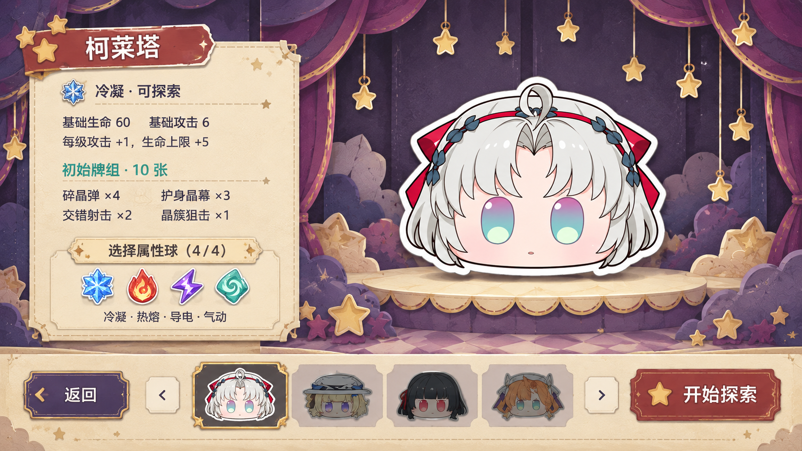
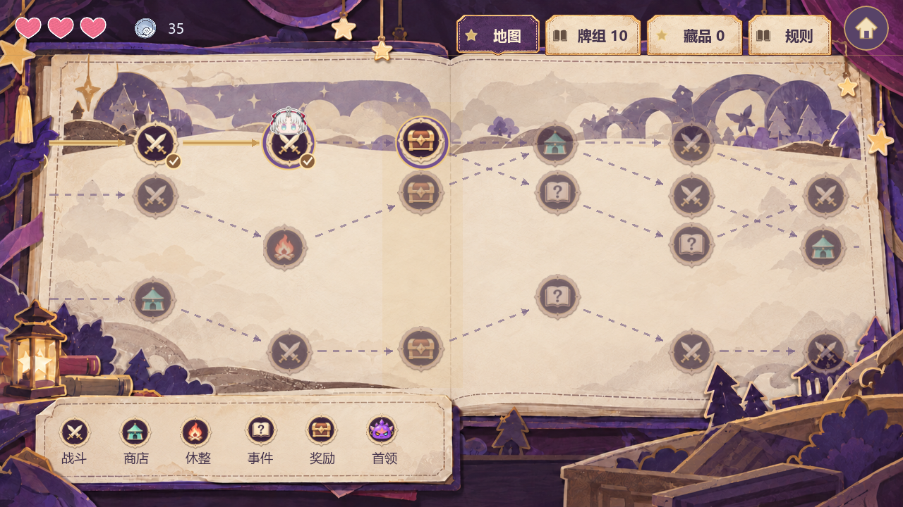
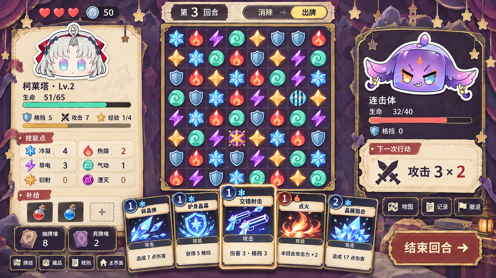
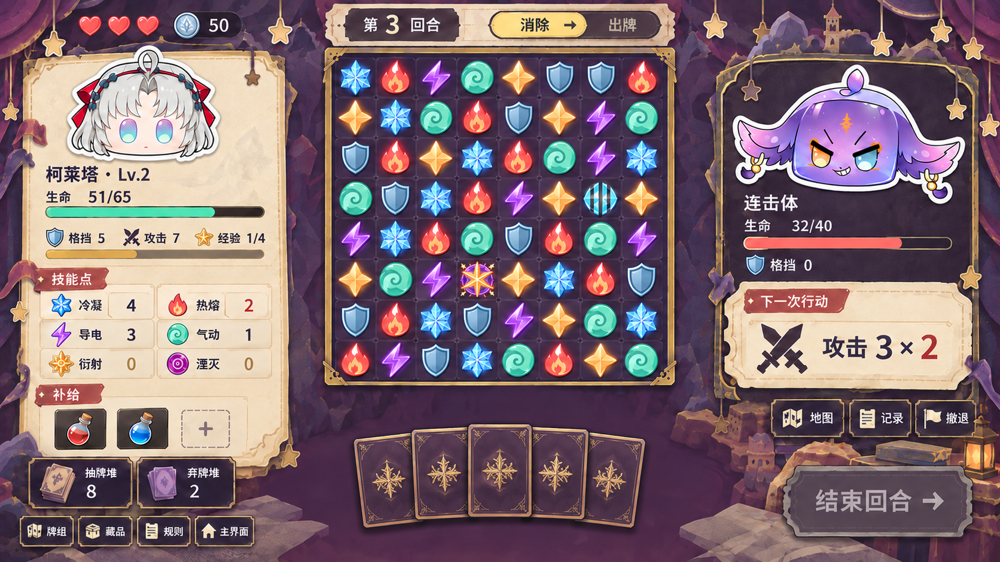
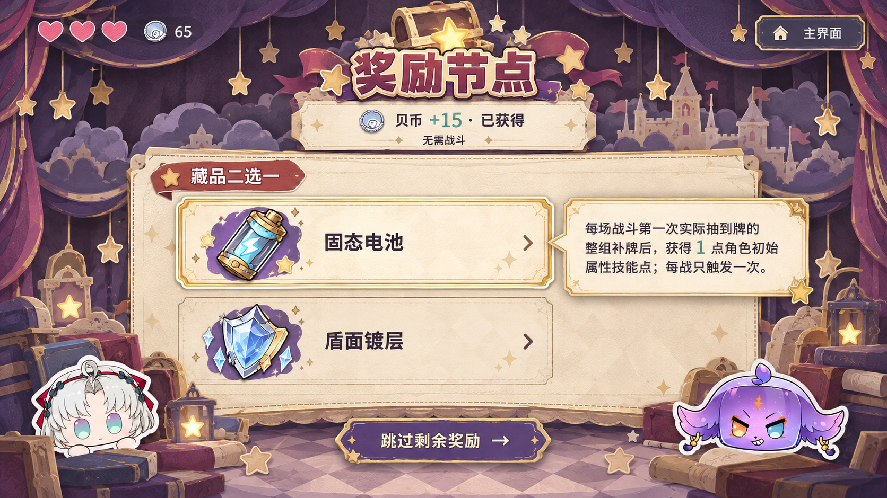
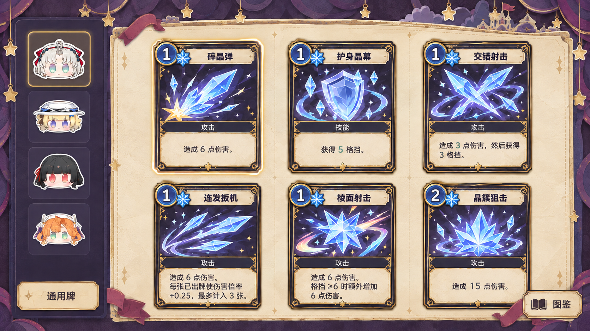
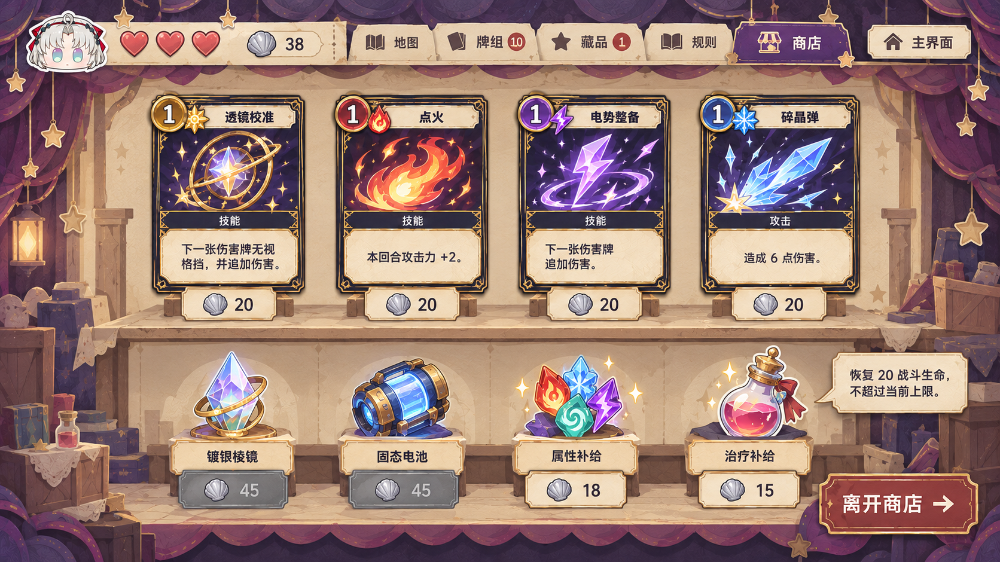

共 8 张页面概念图。地图已更新为横向绘本设计，从左向右推进，第 5 阶段为奖励节点；战斗分为消除与出牌两个状态。点击图片查看原图。

实际运行截图：独立舞台背景、可交互票券按钮与原生文字

角色信息与四属性选择

绘本美术、横向路线与真实交互，第 5 阶段全部为奖励节点

8×8 棋盘与展开手牌

固定棋盘与收起手牌

已领取贝币与藏品二选一

头像分类与六张完整卡面

卡牌、藏品和补给一屏陈列